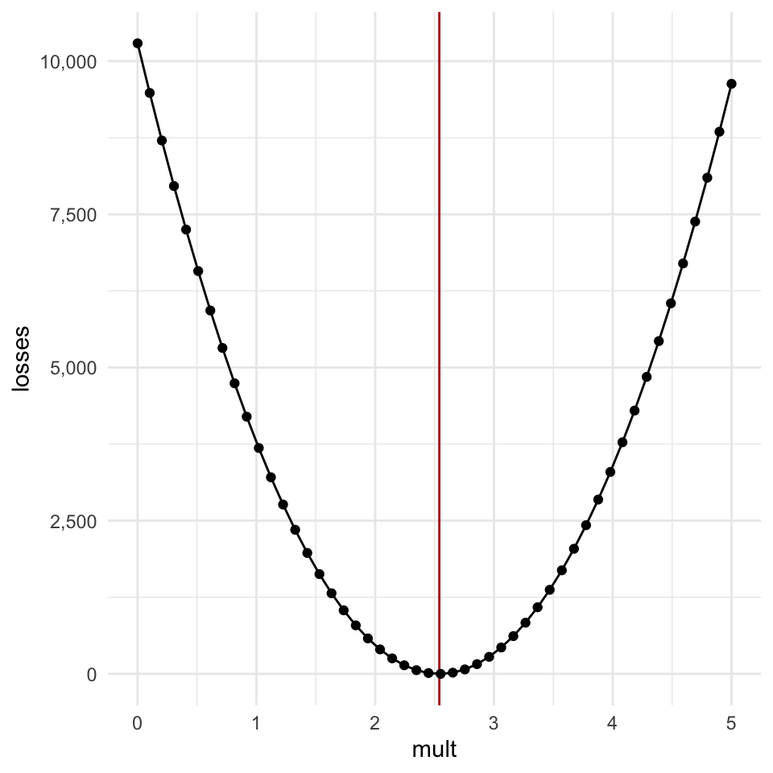

Gradient Descent
Getting there by little steps
What if wanted to convert inches to centimeters, but didn’t know that the formula is inches * 2.54? But what we did have was the following table of belt sizes from the Gap!
| Waist Size | Belt Length (in) | Belt Length (cm) |
|---|---|---|
| 28 | 30.5 | 77 |
| 30 | 32.5 | 83 |
| 32 | 34.5 | 88 |
| 34 | 36.5 | 93 |
| 36 | 38.5 | 98 |
| 38 | 40.5 | 103 |
| 40 | 42.5 | 108 |
| 42 | 44.5 | 113 |
| 44 | 46.5 | 118 |
| 46 | 48.5 | 123 |
What we could do is guess the multiplier, and see how wrong it is.
import numpy as npbelt_in = np.array([30.5, 32.5, 34.5, 36.5, 38.5, 40.5, 42.5, 44.5, 46.5, 48.5])
belt_cm = np.array([77, 83, 88, 93, 98, 103, 108, 113, 118, 123])multiplier_guess = 1.5
cm_guess = belt_in * multiplier_guess# If our guess was right, this should all be 0
cm_guess - belt_cmarray([-31.25, -34.25, -36.25, -38.25, -40.25, -42.25, -44.25, -46.25,
-48.25, -50.25])Our guess wasn’t a great guess. With this multiplier, our guesses are all too small. Let’s describe how bad our guess was with one number, and call it the “loss.” The usual loss function for data like this is the Mean Squared Error.
def mse(actual, guess):
"""
Given the actual target outcomes and the outcomes we guessed,
calculate the mean squared error.
"""
error = actual-guess
squared_error = np.power(error, 2)
mean_squared_error = np.mean(squared_error)
return(mean_squared_error)mse(belt_cm, cm_guess)1728.2125If we made our multiplier guess a little closer to what it ought to be, though, our mean squared error, or loss, should get smaller.
multiplier_guess += 0.2
cm_guess = belt_in * multiplier_guess
mse(belt_cm, cm_guess)1128.2125One thing we could try doing is make a long list of possible multipliers, and try them all to see which one has the smallest loss. This is also known as a “grid search”. I’ll have to re-write the loss function to calculate the loss for specific multipliers
# This gives us 50 evenly spaced numbers between 0 and 50
possible_mults = np.linspace(start = 0., stop = 5., num = 50)
def mse_loss(multiplier, inches, cm):
"""
given a multiplier, and a set of traning data,
(inches and their equivalent centimeters), return the
mean squared error obtained by using the given multiplier
"""
cm_guess = inches * multiplier
loss = mse(cm_guess, cm)
return(loss)losses = np.array([mse_loss(m, belt_in, belt_cm) for m in possible_mults])It’s probably best to visualize the relationship between the multiplier and the loss in a graph.

If we get the index of the smallest loss and get the associated multiplier, we can see that we’re not too far off!
possible_mults[losses.argmin()]2.5510204081632653Why not always just do grid search?
One thing that is going to remain the same no matter how complicated the models get is the measure of how well they’ve done, or the loss, is going to get boiled down to one number. But in real modelling situations, or neural networks, the number of parameters is going to get huge. Here we have only one parameter, but if we had even just 5 parameters, and tried doing a grid search over 50 evenly spaced values of each parameter, the number of possible combinations of parameter values will get intractable.
f"{(5 ** 50):,}"'88,817,841,970,012,523,233,890,533,447,265,625'Without seeing the whole map, we can tell which way is the right direction.
Let’s look at the plot of our parameter vs the loss again:

There are a few really important features of this loss function:
- As the estimate gets further away from the ideal value in either direction, the loss increases.
- The increase is “monotonic”, meaning it’s not bumpy or sometime going up, sometimes going down.
- The further away the guess gets from the optimal value, the steeper the “walls” of the curve get.
Let’s say we were just these two point here, and we couldn’t “see” the whole curve, but we knew features 1 through 3 were true. With that in hand, and information about how the loss function is calculated, we can get the slope of the function at each point (indicated by the arrows).

If we were able to to update our parameter in a way that is proportional to the slope of the loss, then we would gradually get closer and closer to the optimal value. The updates would be very large at first, while the parameter values are far away from the optimal value, and then would start updating by smaller and smaller amounts as we home in on the optimal value because the slopes get shallower and shallower the closer we get.
The slope of the loss function at any given point is the gradient, and this process of gradually descending downwards is called gradient descent.
Gradient Descent
“But Joe!” you exclaim, “How do you calculate the slope of the loss for a single point without seeing the whole distribution?”
The answer to that question used to be “with calculus.” But nowadays, people do it with “autograd” or “autodiff”, which basically means “we let the computer figure it out.” There isn’t autograd functionality in numpy, but there is in a closely related library called Jax, which is being developed by Google. Jax has a module called numpy which is designed to operate exactly the same way as numpy.
import jax.numpy as jnp
from jax import gradI’m going to rewrite the inches to centimeter functions over again, this time making sure to use jax functions to ensure everything runs smoothly.
def inch_to_cm_jax(multiplier, inches):
"""
a function that converts inches to cm
"""
cm = jnp.dot(inches, multiplier)
return(cm)
def cm_loss_jax(multiplier, inches, cm):
"""
estimate the mismatch between the
"""
est = inch_to_cm_jax(multiplier, inches)
diff = est - cm
sq_err = jnp.power(diff, 2)
mean_sq_err = jnp.mean(sq_err)
return(mean_sq_err)Then we pass the new loss function to a jax function called grad() to create a new gradient function.
cm_loss_grad_jax = grad(cm_loss_jax, argnums=0)Where cm_loss_jax() will give use the mean-squared error for a specific multiplier, cm_loss_grad_jax() will give us the slope for that multiplier, automatically.
print(multiplier_guess)1.7# This is the mean-squared-error
print(cm_loss_jax(multiplier_guess, belt_in, belt_cm))1128.2124# This is the slope
print(cm_loss_grad_jax(multiplier_guess, belt_in, belt_cm))-2681.3499Learning Rates and “Epochs”
Now we can write a for-loop to iteratively update out multiplier guess, changing it just a little bit proportional to the gradient. There are two “hyper parameters” we need to choose here.
- The “learning rate”. We can’t go adding the gradient itself to the multiplier. The gradient right now is in the thousands, and we’re trying to nudge 1.7 to 2.54. So, we pick a “learning rate”, which is just a very small decimal to multiply the gradient by before we add it to the parameter. I’ll say let’s start at 1/100,000
- The number of “epochs.” We need to decide how many for loops we’re going to go through before we decide to call it and check on how the learning has gone. I’ll say let’s go for 1000.
learning_rate = 1/100_000
epochs = 1000# I want to be able to plot everything after, so I'm going to create collectors.
epoch_list = []
param_list = []
loss_list = []
gradient_list = []multiplier_guess = 0.
for i in range(epochs):
# append the current epoch
epoch_list.append(i)
# append the current guess
param_list.append(multiplier_guess)
loss = cm_loss_jax(multiplier_guess, belt_in, belt_cm)
loss_list.append(loss)
gradient = cm_loss_grad_jax(multiplier_guess, belt_in, belt_cm)
gradient_list.append(gradient)
multiplier_guess += -(gradient * learning_rate)
print(f"The final guess was {multiplier_guess:.3f}")The final guess was 2.541
This will all work with more parameters
import pandas as pd
from palmerpenguins import load_penguinspenguins = load_penguins()bill_length = np.array(penguins.dropna()["bill_length_mm"])
body_mass = np.array(penguins.dropna()["body_mass_g"])bill_length_z = (bill_length - bill_length.mean())/bill_length.std()
body_mass_z = (body_mass - body_mass.mean())/body_mass.std()bill_length_X = np.stack([np.ones(bill_length_z.size), bill_length_z], axis = 1)
bill_length_X[0:10, ]array([[ 1. , -0.89604189],
[ 1. , -0.82278787],
[ 1. , -0.67627982],
[ 1. , -1.33556603],
[ 1. , -0.85941488],
[ 1. , -0.9326689 ],
[ 1. , -0.87772838],
[ 1. , -0.52977177],
[ 1. , -0.98760942],
[ 1. , -1.72014965]])param_guess = np.array([0., 0.])
mass_guess = np.dot(bill_length_X, param_guess)np.mean(np.power(body_mass_z - mass_guess, 2))1.0000000000000004def fit_mass(params, X):
"""
Given some values and parameters
guess the outcome
"""
est = jnp.dot(X, params)
return(est)
def fit_loss(params, X, actual):
"""
Return the loss of the params
"""
est = fit_mass(params, X)
err = est - actual
sq_err = jnp.power(err, 2)
mse = jnp.mean(sq_err)
return(mse)
fit_grad = grad(fit_loss, argnums=0)fit_loss(param_guess, bill_length_X, body_mass_z)DeviceArray(1.0000001, dtype=float32)fit_grad(param_guess, bill_length_X, body_mass_z)DeviceArray([ 1.3271347e-08, -1.1789025e+00], dtype=float32)epoch_list = []
param_list = []
loss_list = []
gradient_list = []
# I'm cheating starting out so close, just so this'll run quickly
param_guess = np.array([6., 4.])
learning_rate = 0.01
#vt = np.array([0., 0.])
for i in range(1000):
# append the current epoch
epoch_list.append(i)
param_list.append(param_guess)
loss = fit_loss(param_guess, bill_length_X, body_mass_z)
loss_list.append(loss)
gradient = fit_grad(param_guess, bill_length_X, body_mass_z)
gradient_list.append(gradient)
param_guess += -(gradient * learning_rate)
print(f"Final param guess was {param_guess}")Final param guess was [1.0582281e-08 5.8945251e-01]param_df %>%
slice(1:500) %>%
ggplot(aes(group = epoch)) +
geom_point(data = penguins,
aes(x = bill_length_z, y = body_mass_z),
group = NA)+
geom_abline(aes(slope = slope, intercept = intercept, color = loss)) +
theme(text = element_text(family = "serif", size = 16))+
transition_states(states = epoch)Even more complex
body_mass = jnp.array(penguins.dropna()["body_mass_g"])
bill_length = jnp.array(penguins.dropna()["bill_length_mm"])
bill_depth = jnp.array(penguins.dropna()["bill_depth_mm"])
flipper_length = jnp.array(penguins.dropna()["flipper_length_mm"])body_mass_z = (body_mass-body_mass.mean())/body_mass.std()
bill_length_z = (bill_length-bill_length.mean())/bill_length.std()
bill_depth_z = (bill_depth-bill_depth.mean())/bill_depth.std()
flipper_length_z = (flipper_length-flipper_length.mean())/flipper_length.std()data = jnp.vstack([bill_length_z, bill_depth_z, flipper_length_z])from jax import random
from jax.nn import relu
key = random.PRNGKey(42)
subkeys = random.split(key, 3)
layer_1 = random.uniform(key = subkeys[0], shape = (3,5))
layer_2 = random.uniform(key = subkeys[1], shape = (5,5))
layer_3 = random.uniform(key = subkeys[1], shape = (5,1))#jnp.dot(relu(jnp.dot(data.T, layer_1)), layer_2).squeeze()def estimate_mass(layers, data):
l0_out = jnp.dot(data.T, layers[0])
#l0_act = relu(l0_out)
l1_out = jnp.dot(l0_out, layers[1])
#l1_act = relu(l1_out)
estimate = jnp.dot(l1_out, layers[2])
#estimate = jnp.dot(jnp.dot(jnp.dot(data.T, layers[0]), layers[1]), layers[2])
return(estimate)
def mass_loss(layers, data, body_mass_z):
estimate = estimate_mass(layers, data)
err = estimate.squeeze() - body_mass_z
sq_err = jnp.power(err, 2)
mean_sq_err = sq_err.mean()
return(mean_sq_err)
mass_grad = grad(mass_loss, argnums = 0)est_list = []
loss_list = []
key = random.PRNGKey(42)
subkeys = random.split(key, 3)
layer_1 = random.uniform(key = subkeys[0], shape = (3,5))
layer_2 = random.uniform(key = subkeys[1], shape = (5,5))
layer_3 = random.uniform(key = subkeys[2], shape = (5,1))
learning_rate = 0.001
for i in range(1000):
est = estimate_mass((layer_1, layer_2, layer_3), data)
loss = mass_loss((layer_1, layer_2, layer_3), data, body_mass_z)
est_list.append(est)
loss_list.append(loss)
gradient = mass_grad((layer_1, layer_2, layer_3), data, body_mass_z)
layer_1 += -(gradient[0] * learning_rate)
layer_2 += -(gradient[1] * learning_rate)
layer_3 += -(gradient[2] * learning_rate)loss_arr = np.array(loss_list)
est_arr = np.array(est_list)data.frame(py$est_arr) %>%
mutate(epoch = 1:n()) %>%
pivot_longer(starts_with("X")) -> fitslibrary(palmerpenguins)
library(gganimate)
penguins %>%
drop_na() %>%
mutate(body_mass_z = scale(body_mass_g)) %>%
select(body_mass_z, species) %>%
mutate(name = paste0("X", 1:333)) -> real_datafits %>%
left_join(real_data) %>%
filter(epoch %% 5 == 0) %>%
ggplot(aes(body_mass_z, value))+
geom_abline(intercept = 0, slope = 1, color = "grey")+
geom_point(aes(color = species)) +
theme(text = element_text(family = "serif", size = 16))+
scale_color_bright()+
transition_states(states = epoch)Categorical prediction
from jax.nn import one_hot, softmaxunique_species = set(penguins.dropna()["species"])
species_to_index = {s:idx for idx, s in enumerate(unique_species)}
species_index = np.array([species_to_index[s] for s in penguins.dropna()["species"]])
species_arr = jnp.array(species_index)
species_one_hot = one_hot(species_arr, 3)data = jnp.vstack([bill_length_z, bill_depth_z, flipper_length_z, body_mass_z])
data_idx = np.array(list(range(data.shape[1])))
n_train = int(np.floor(data.shape[1] * 0.8))
train_idx = np.random.choice(list(range(data.shape[1])), size = n_train)
test_idx = [x for x in list(range(data.shape[1])) if not x in train_idx]
data_train = data[:, train_idx]
data_test = data[:, test_idx]
label_train = species_one_hot[train_idx,]
label_test = species_one_hot[test_idx,]
species_index_train = species_index[train_idx]
species_index_test = species_index[test_idx]label_train.shape(266, 3)def estimate_species(layers, biases, data):
l0_out = jnp.dot(data.T, layers[0]) + biases[0]
l0_act = relu(l0_out)
l1_out = jnp.dot(l0_out, layers[1]) + biases[1]
l1_act = relu(l1_out)
l2_out = jnp.dot(l1_out, layers[2]) + biases[2]
estimate = softmax(l2_out, axis = -1)
#estimate = jnp.dot(jnp.dot(jnp.dot(data.T, layers[0]), layers[1]), layers[2])
return(estimate)
def estimate_loss(layers, biases, data, species_one_hot):
est = estimate_species(layers, biases, data)
loss = -1 * (jnp.log(est) * species_one_hot).sum()
return(loss)
def accuracy(est, species_index):
acc = sum(est.argmax(1) == species_index)/species_index.size
return(acc)
estimate_grad = grad(estimate_loss, argnums = (0,1))key = random.PRNGKey(42)
layer_1 = random.uniform(key = subkeys[0], shape = (4,5))
biases_1 = random.uniform(key = subkeys[1], shape = (5,))
layer_2 = random.uniform(key = subkeys[2], shape = (5,5))
biases_2 = random.uniform(key = subkeys[3], shape = (5,))
layer_3 = random.uniform(key = subkeys[4], shape = (5,3))
biases_3 = random.uniform(key = subkeys[5], shape = (3,))
epochs = 900
learning_rate = 0.001
train_loss_list = []
test_loss_list = []
train_acc_list = []
test_acc_list = []
for i in range(epochs):
est = estimate_species((layer_1, layer_2, layer_3),
(biases_1, biases_2, biases_3),
data_train)
train_loss = estimate_loss((layer_1, layer_2, layer_3),
(biases_1, biases_2, biases_3),
data_train, label_train)
train_loss_list.append(train_loss)
train_acc = accuracy(est, species_index_train)
train_acc_list.append(train_acc)
test_est = estimate_species((layer_1, layer_2, layer_3),
(biases_1, biases_2, biases_3),
data_test)
test_loss = estimate_loss((layer_1, layer_2, layer_3),
(biases_1, biases_2, biases_3),
data_test, label_test)
test_loss_list.append(test_loss)
test_acc = accuracy(test_est, species_index_test)
test_acc_list.append(test_acc)
gradient = estimate_grad((layer_1, layer_2, layer_3),
(biases_1, biases_2, biases_3),
data_train, label_train)
layer_1 += -(learning_rate * gradient[0][0])
layer_2 += -(learning_rate * gradient[0][1])
layer_3 += -(learning_rate * gradient[0][2])
biases_1 += -(learning_rate * gradient[1][0])
biases_2 += -(learning_rate * gradient[1][1])
biases_3 += -(learning_rate * gradient[1][2])train_acc_arr = np.array(train_acc_list)
test_acc_arr = np.array(test_acc_list)plot(py$train_acc_arr)train_loss_arr = np.array(train_loss_list)py$train_loss_arr[900:1000] * 0.001 [1] NaN NA NA NA NA NA NA NA NA NA NA NA NA NA NA NA NA NA
[19] NA NA NA NA NA NA NA NA NA NA NA NA NA NA NA NA NA NA
[37] NA NA NA NA NA NA NA NA NA NA NA NA NA NA NA NA NA NA
[55] NA NA NA NA NA NA NA NA NA NA NA NA NA NA NA NA NA NA
[73] NA NA NA NA NA NA NA NA NA NA NA NA NA NA NA NA NA NA
[91] NA NA NA NA NA NA NA NA NA NA NA